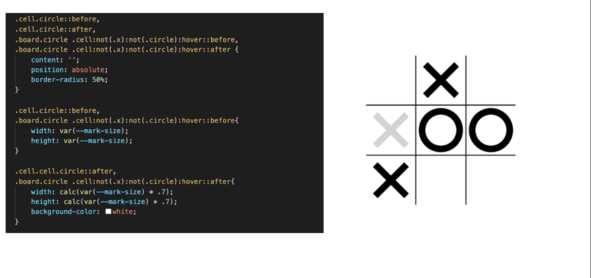
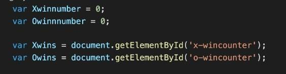

class: center, middle # [frango](..) Antic, Carta, Fanton, Frasson, Tangredi - 3^CSA --- class: center, middle il sito è disponibile su [frangogamesinc.netlify.app](http://frangogamesinc.netlify.app) --- class: center, middle #Come abbiamo fatto? Tramite github ed netlify. --- class: center, middle #Cos'è github? GitHub, Inc. is a provider of Internet hosting for software development and version control using Git. _wikipedia.org_ --- class: center, middle #Git vs. Github >Git is software for tracking changes in any set of files, usually used for coordinating work among programmers collaboratively developing source code during software development. _wikipedia.org_ --- class: center, middle #Cos'è netlify? >Netlify is a San Francisco-based cloud computing company that offers hosting and serverless backend services for web applications and static websites. _wikipedia.org_ --- class: center, middle ##la struttura del sito #live demo! --- class: center, middle #com'è resa graficamente questa presentazione? tramite [remark](http://remarkjs.com). seguono due slide prese da lì... --- layout: false ## What is it? A simple, in-browser, Markdown-driven slideshow tool targeted at people who know their way around HTML and CSS, featuring: - Markdown formatting, with smart extensions - Presenter mode, with cloned slideshow view - Syntax highlighting, supporting a range of languages - Slide scaling, thus similar appearance on all devices / resolutions - Touch support for smart phones and pads, i.e. swipe to navigate slides --- ## Why use it? As the slideshow is expressed using Markdown, you may: - Focus on the content, expressing yourself in next to plain text not worrying what flashy graphics and disturbing effects to put where As the slideshow is actually an HTML document, you may: - Display it in any decent browser - Style it using regular CSS, just like any other HTML content - Use it offline! As the slideshow is contained in a plain file, you may: - Store it wherever you like; on your computer, hosted from your Dropbox, hosted on Github Pages alongside the stuff you're presenting... - Easily collaborate with others, keeping track of changes using your favourite SCM tool, like Git or Mercurial --- # Etica del sito il sito è costruito sul rifiuto del copyright, favorendo il free use, la pirateria etica e l’open source <img src="img/Informaticaababababa1.png" style="max-width:30%;" /> <img src="img/Informaticaababababa2.png" style="max-width:25%;" /> --- # HTML --- #CSS --- --- class: center, middle --- class: center, middle  --- class: center, middle --- #Javascript --- class: center, middle --- class: center, middle --- #Javascript <audio style="width:50px; position: fixed; bottom:55%" controls> <source src="./audio/lololol 17-O.wav" type="audio/wav"> </audio><audio style="width:50px; position: fixed; bottom: 45%" controls> <source src="./audio/lololol 18-X.wav" type="audio/wav"> </audio><audio style="width:50px; position: fixed; bottom: 35%" controls> <source src="./audio/ippipi.mp3" type="audio/mpeg"> </audio> --- class: center, middle # Html segna punti In queste slide verrà spiegata la realizzazione del codice per tenere i punti partita dopo partita\. contengono la scritta e il contatore del punteggio --- # CSS segna vittorie <div style="position:fixed; right: 0%; bottom: 25%; width:45%;" > __id __ si da lo stile con \#\. __position absolute __ fa si che la loro posizione non vada a modificare quella di altri elementi\. _ _font family__ font testo __font size__ dimensioni testo __margin left __ dice che la scritta si trova al 45% della larghezza dello schermo \(a partire da sinistra \) __margin top__ 13% dell'altezza dello schermo a partire dall'alto --- # JS segna vittorie  <div style="position:fixed; right: 0%; bottom: 45%; width:50%;" > Dichiaro due variabili per contare il numero di vittorie delle X o dei O\. Prendo altre due variabili e gli assegno un elemento dell’html con __getElementById__ --- <div style="position:fixed; right: 2.5%; bottom: 30%; width:45%;" > Alla fine del codice aggiunto questo if, dove la variabile circleTurn può essere vera o falsa - se è vera allora hanno vinto le O: aumento di 1 il numero di vittorie e lo scrivo aggiungendolo al testo dell'html - se circleTurn è falsa allora hanno vinto le X, ripeto lo stesso procedimento fatto per le O\. --- class: center, middle #Sound design -- Ableton 😃 --- class: center, middle #Live demo!! --- class: center, middle #Grazie per l'attenzione! :3